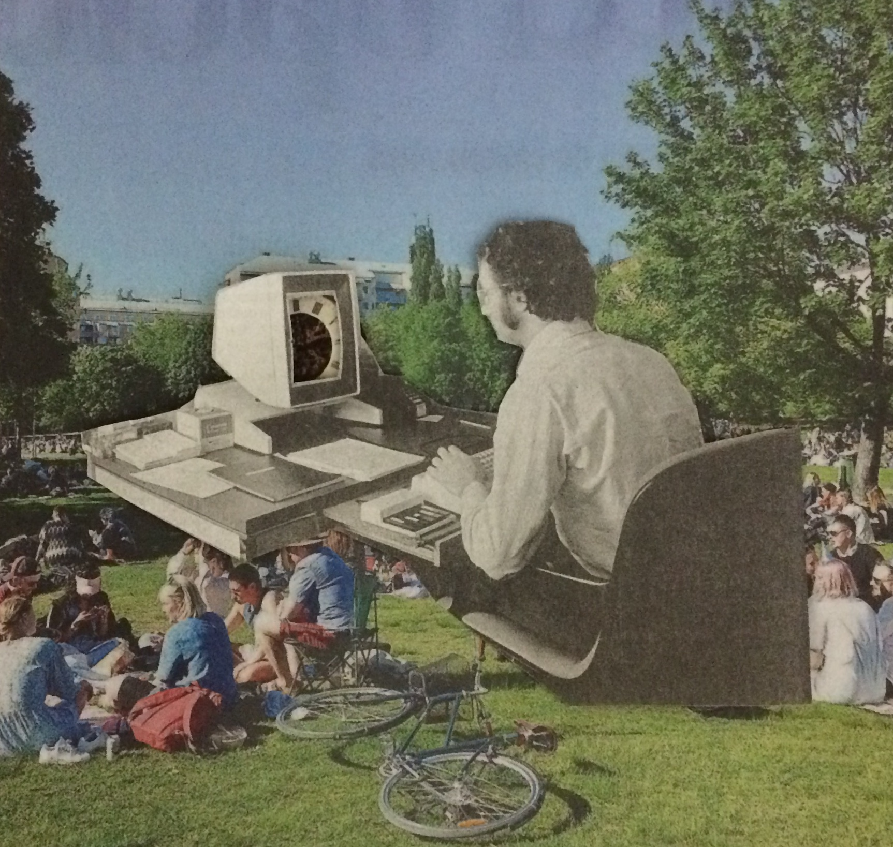
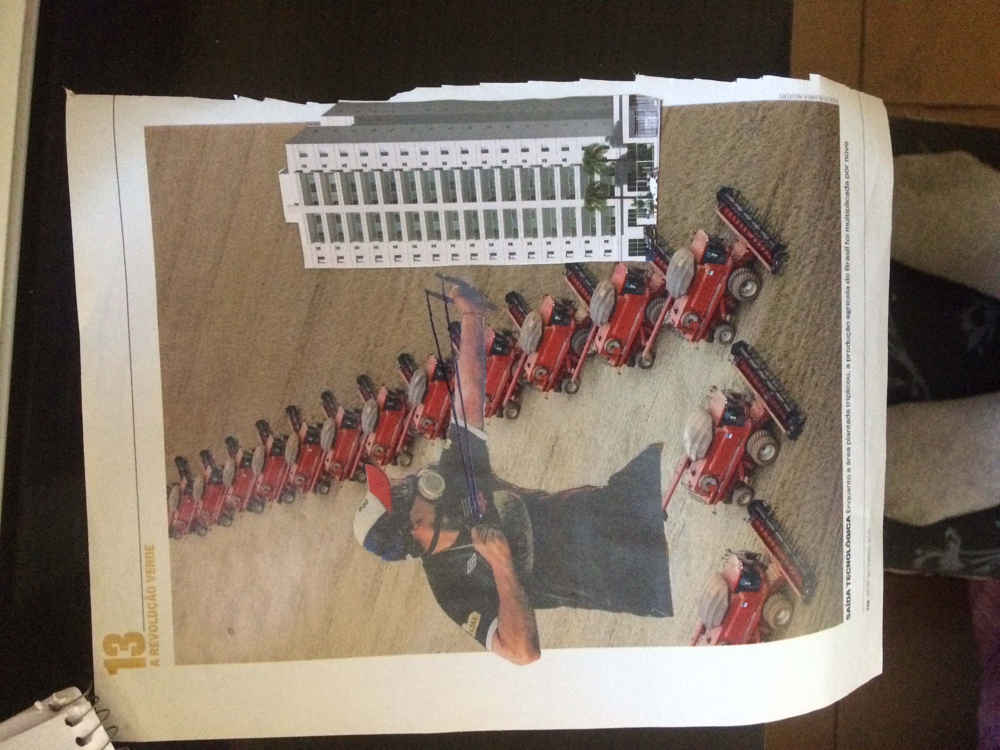
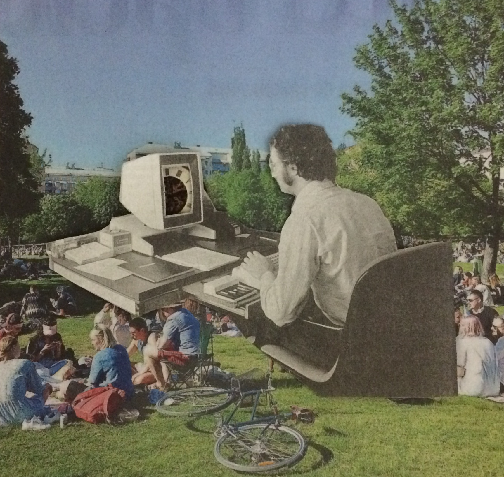
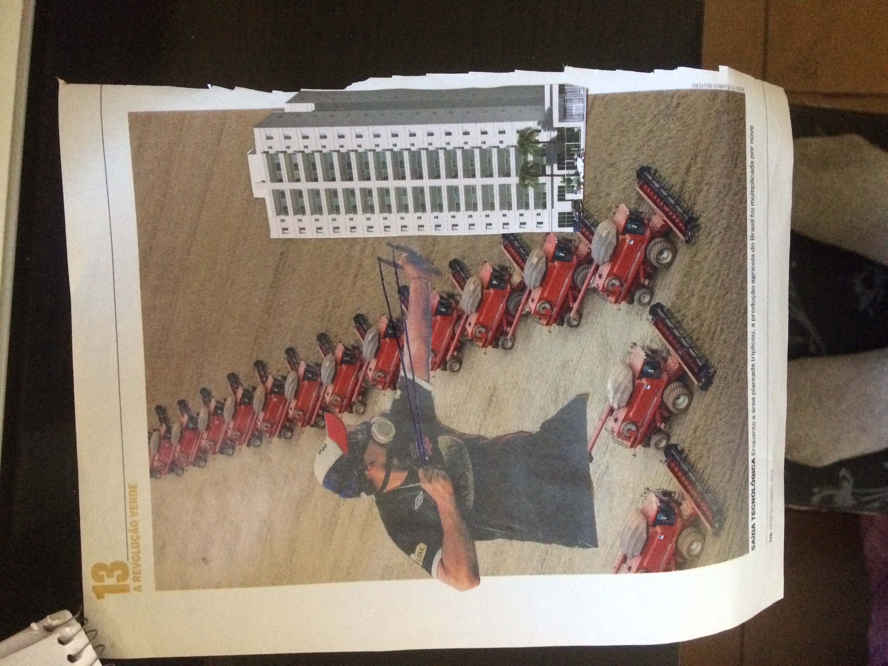

colagens
Produzidas com revistas e jornais.
 
beats
Produzidos no FL Studio.
gameplays
Algumas gameplays.
oldpedrx, beatmaker, desenvolvedor junior e artista.
Produzidas com revistas e jornais.
 
Produzidos no FL Studio.
Algumas gameplays.